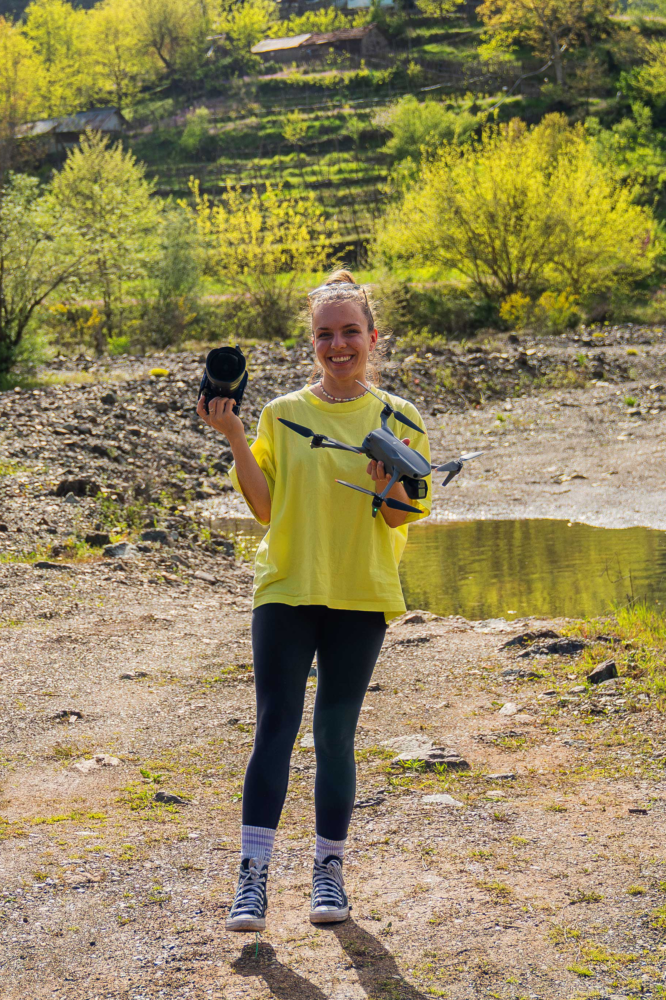

Hi, ich bin Nici
Ich bin Nici, freiberufliche gelernte Videografin und vor 6 Jahren hat es mich ins schöne Köln verschlagen. Täglich habe ich mit Bewegtbild zu tun und filme in ganz unterschiedlichen Bereichen.
Ob Firmenveranstaltungen oder Imagefilme für Unternehmen, Retreats, Hochzeiten, Studioproduktionen in unserem Atelier oder generell Content Creation für Social Media. Ich arbeite lokal in Köln sowie international und liebe es, besondere Momente authentisch und atmosphärisch festzuhalten.
Meine Arbeitsweise
Für mich ist Videografie mehr als nur Technik. Es geht darum, die echte Energie eines Moments einzufangen. Dabei ist mir wichtig, dass am Drehort eine entspannte und positive Atmosphäre herrscht.
Ich liebe es, während der Drehs gemeinsam mit meinen Kunden Spaß zu haben. Denn genau diese Leichtigkeit sieht man später im fertigen Film. Authentisch, mit vielen Emotionen und dem Gespür für die kleinen, echten Details.
Immer mit dabei
Meine Arbeit führt mich an die spannendsten Orte – nicht nur in Köln, sondern weltweit. Dabei muss ich oft flexibel sein, was die Größe meines Equipments angeht. Egal, ob großes oder kleines Setup, am Ende kommt es auf die Skripte, Gegebenheiten vor Ort und die Geschichten an.

Kameras, Objektive und Drohne sind immer dabei, um die perfekte Perspektive für eure Geschichte zu finden. Authentisch, mit viel Gepäck und noch mehr Leidenschaft für den nächsten Shot!